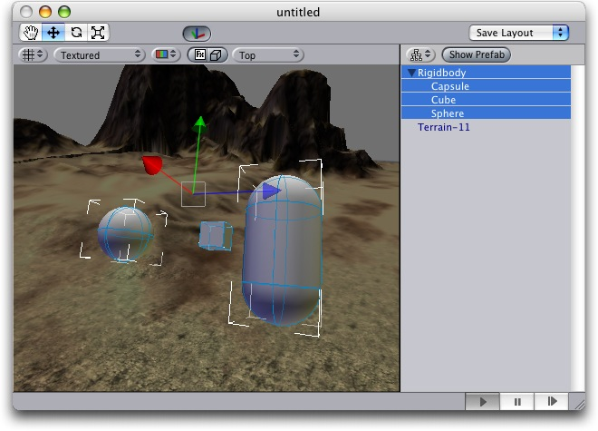

Rigidbody components take control over an object's position - it makes the objects fall down under the influence of gravity, and can calculate how objects will respond to collisions.
Properties
| Property: | Function: |
|---|---|
| The weight of the object. Keep this below 1 for the best stability. | |
| How much the object is slowed down from air resistance. 0 means not at all, whereas infinity makes the object stop immediately. | |
| How fast the object's rotation is slowed down. 0 means not at all, whereas infinity makes the object stop immediately. | |
| If on, the object is affected by gravity. | |
| If on the object will not be driven by the physics engine. This is useful for moving platforms or if you want to animate an rigidbody that has an hinge attached. |
Details
Rigidbodies provide a key ingredient for making your world come alive, simulating lots of physical behaviour and providing lots of quick emergent behaviours.
You move objects under physics control about by adding forces to them, rather than by setting the position of the objects. While cumbersome, this is important in order to ensure the stability of the physics system. Adding forces prevents objects accidentally moving into walls and ensures that the physics system can handle collision response in a sensible manner.
Colliders
In order for objects to collide correctly, they need to have colliders attached. Colliders come in two flavours: Mesh Colliders and Collision Primitives.
Mesh colliders are the easiest to use - simply add a MeshCollider to an object to make othe objects bounce of it. When importing a mesh you can also enable the Has Mesh Collider option in the import settings.
Collision primitives are the basic shapes of spheres, boxes and capsules.
Compound colliders
You add multiple colliders to a rigidbody by adding collision objects as transform children of the rigidbody object. Look at the example below:
|  |
The terrain has a Mesh Collider attached, as you cannot capture its irregular shape using collision primitives. The Rigidbody (shown in the sceneview with the transform handles) has 3 children: the capsule, the cube and the sphere. When playing, the rigidbody lands on the terrain, balancing on the 3 collision primitives.
There is a catch to all this, though: Meshes can't collide with each other, so the typical solution is to use primitives for any objects that move, and meshes for static background objects.
Parenting
When an object is under physics control, it moves semi-independantly of the way its transform parents move. If you move any parents, they will pull the physics object along with them. However, the physically controlled objects still fall down due to gravity and tumble when they hit cliff sides, etc.
Scripting
When objects are under physics control, you mainly control them from scripts. You do this by calling AddForce and AddTorque on the object's rigidbody, rather than setting the position or rotation on its transform.
Animation
For ragdoll effects it is important to be able to switch between a characer being animated or simulated by physics. For this purpose rigidbodies can be marked as kinematic. This means the rigidbody is not affected by collisions or force applied to it. Any motion or rotation has to be set directly by changing the position or rotation of the transform through scripting or by animating it. Kinematic rigidbodies do affect other objects. Joints which are attached to kinematic actors will constrain any other rigid bodies attached to them. Also kinematic rigidbodies will affect other rigidbodies through collisions.
Hints
- The relative masses of two objects determines how they react when they collide.
- Making one object have higher mass than another does not make it fall faster in free fall. Use drag for that.
- A low drag value makes an object seem heavy. A high one makes it seem light. Typical values for drag are between .001 (solid block of metal) and 10 (feather)